Linux漫谈系列--磁盘管理
一、原理
1、磁盘结构
（1）物理结构
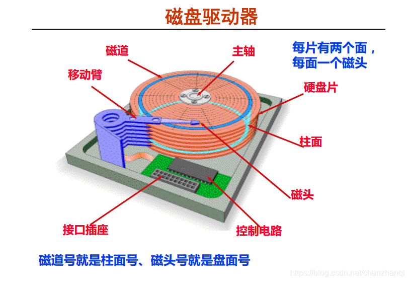
机械硬盘的工作原理（B站）
固态硬盘的工作原理（B站）
（2）逻辑结构
磁头、柱面和扇区

硬盘就是一个旋转餐桌 （码农翻身）
PPT课件（刘老师整理课件（1--35））
（3）经典面试问题
（1）一个磁盘有3个圆盘6个磁头，7个柱面（每个盘片7个磁道） 的磁盘，每条磁道有12个扇区，这里每个扇区是 512 个字节。请计算磁盘的容量？
2、磁盘分区
（1）Linux 系统硬盘在哪里？
漫画图解unix哲学 Everything is file!
Linux常见设备文件：

不同的硬盘接口
IDE 接口和SATA 接口：
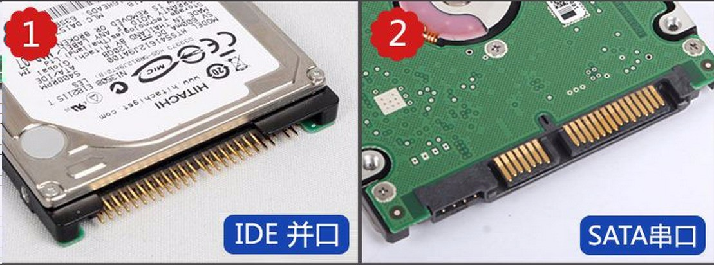
SCSI 接口：
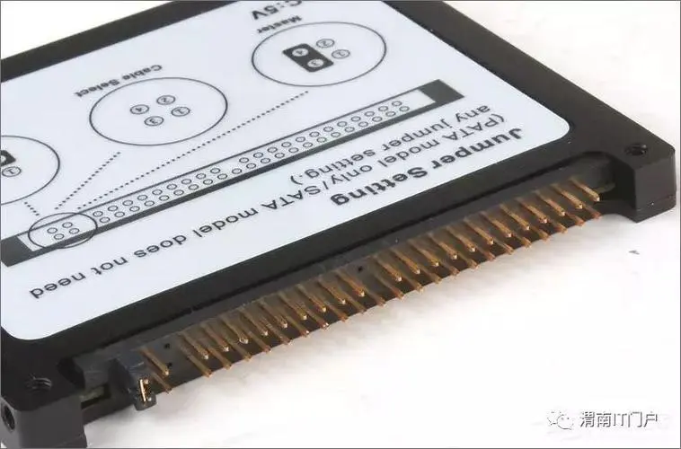
Nvme 接口：
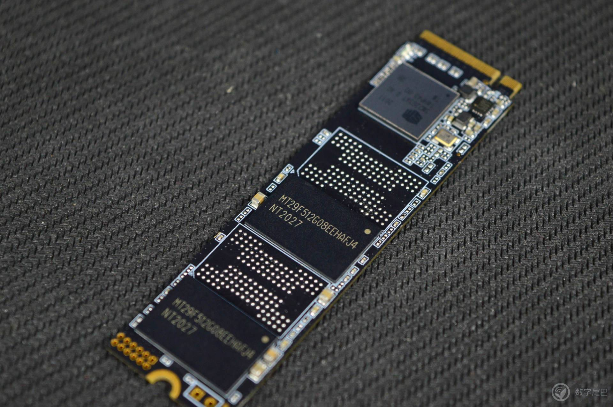
Linux 硬盘究竟在哪里？

可以使用下面的命令查看 Linux 所有的硬盘
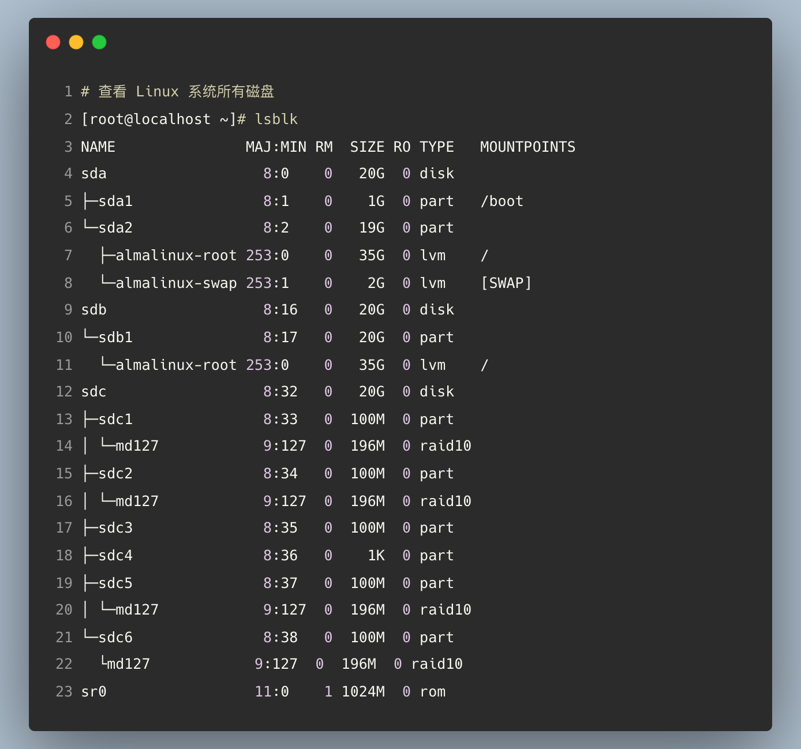
从上图张可以看到系统里面有三块硬盘，分别是sda, sdb, sdc。
那么这里的sda1, sda2 有分别是什么含义呢？接着聊。
（2）主分区、扩展分区和逻辑分区
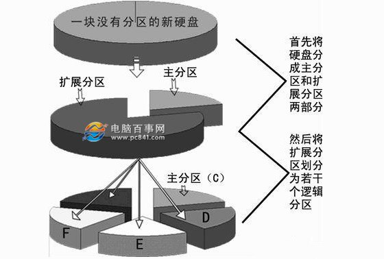
Windows 系统分区
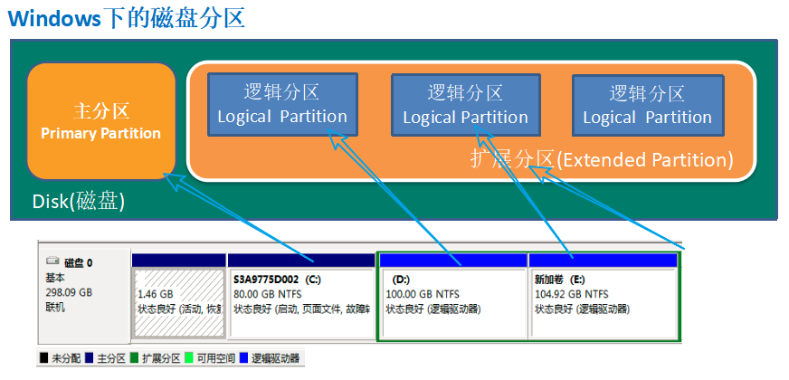
Linux 系统分区（以 MBR 分区为例）
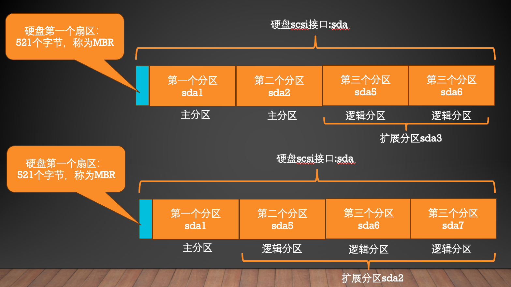
（3）主引导记录MBR
PPT课件（刘老师整理课件）（36--51）

为啥主分区+扩展分区的数量不能超过 4 个？
从硬盘的第一个扇区 512 个字节说起：
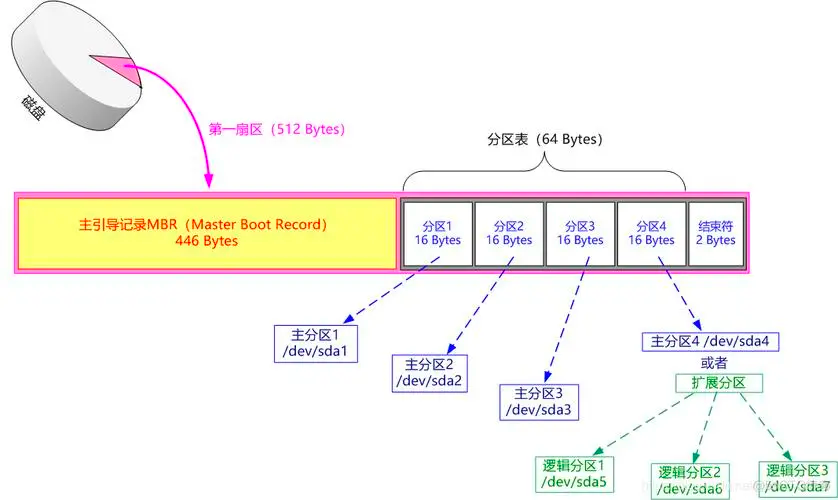
换一副图来理解：
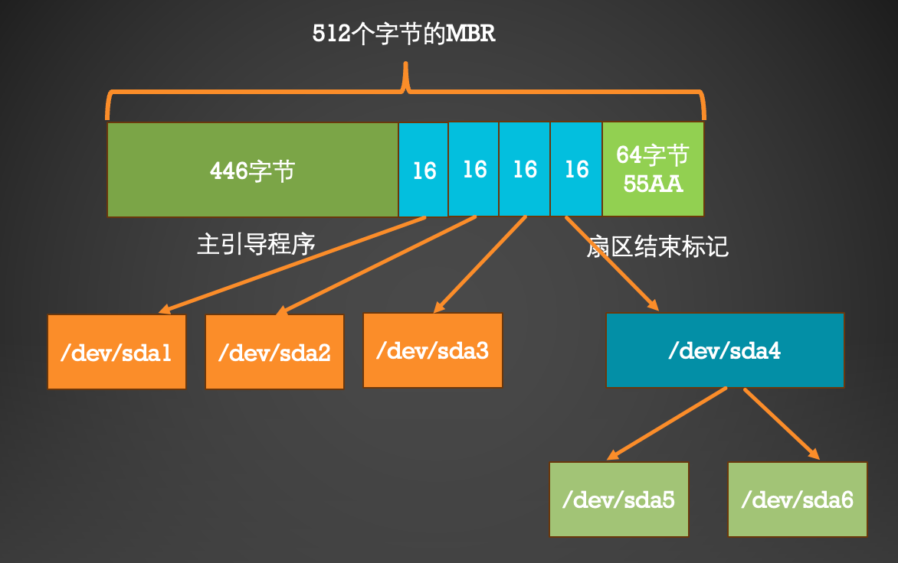
再换一幅图来理解一下一张硬盘的分区示意图。
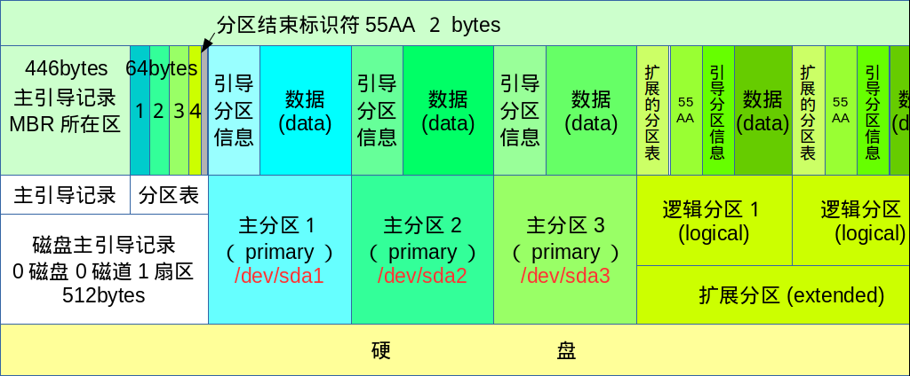
磁盘分区用数字进行表示：其中1--4，这四个数字只能表示主分区和扩展分区
逻辑分区的第一个用5表达，第二个逻辑分区是6，以此类推。
如下图所示：
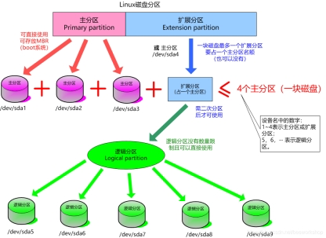
（4）经典面试问题
问题 1：把 Linux 系统中第二块SATA 接口的硬盘划分为 4 个可用的分区，有几种划分方法？
答：可以分为以下几种情况
4 个主分区； sdb1, sdb2, sdb3, sdb4
1个主分区，3 个逻辑分区；sdb1, sdb5, sdb6, sdb7
2 个主分区，2个逻辑分区；sdb1, sdb2, sdb5, sdb7
3 个主分区，1个逻辑分区；sdb1, sdb2, sdb3, sdb5
那么思考一下，还有没有其他情况？
问题 2：请解释/dev/sda3 是主分区、扩展分区还是逻辑分区？/dev/sda5 呢？
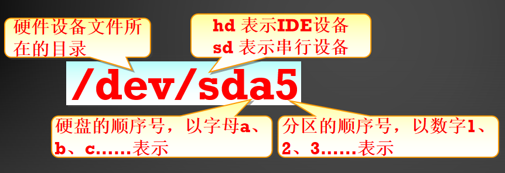
问题 3：Linux 系统主分区+扩展分区数量为什么不能超过 4 个？
问题 4：什么是 MBR，位于硬盘的什么位置？大小是多少？起到什么作用？
3、文件系统
（1）为什么要格式化？
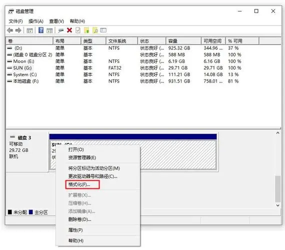
为了在该分区上创建文件系统。
那么一个分区为啥要创建文件系统？
汉语字典索引
首先解剖一个文件是如何在硬盘上存储的，就明白为啥要创建文件系统了？
（2）文件在硬盘上是如何存储的？
在 Linux 系统中，一个名字为 /root/test.sh 的文件在硬盘上是如何存储的？
test.sh 文件在硬盘上存储了两部分内容：
（1）第一部分存储在硬盘分区sda1 的inode区域的一个编号为 18127615 的 inode节点内。
存储的是该文件的属性信息，具体的属性见下图的黄色箭头指示的信息。
（2）第二部分存储在硬盘分区的数据区部分
具体存储内容见下图，也就是该文件的真正的数据。
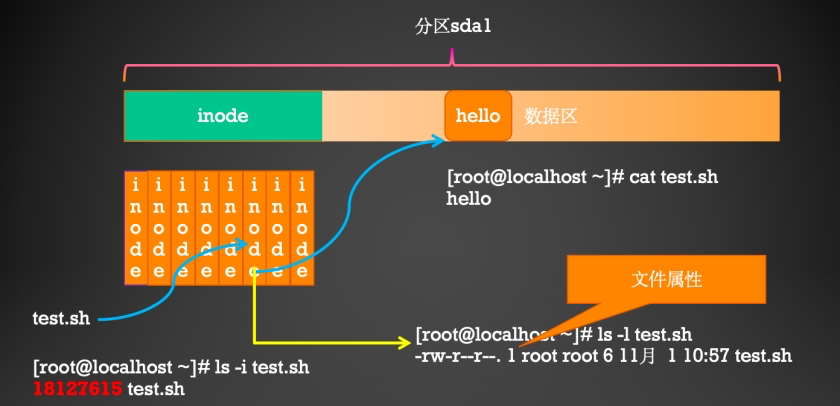
（3）目录在硬盘上是如何存储的？
对于目录而言，当我们新建一个目录的时候，文件系统会分配一个inode和一个block给该目录。
其中inode记录该目录的相关权限和属性，并记录分配到的那块block号码
而block块则是记录在这个目录下的文件名与该文件名对应的inode的号码的对应关系表。
例题：
以访问/root/user1.txt文件为例，来说明目录是如何存储的：
.png)
从上图中可以看出Linux目录是这样的一种结构：

如何从linux的根目录开始一层一层的找到文件的？你理解了吗？
首先来查看根目录的inode
然后读该目录数据块中存储的对应关系：子目录或者文件和其对应inode的对应表。通过该对应表找到子目录或者文件。
一层一层找下去即可。
（3）经典面试问题
问题：Linux 系统中，文件的名字存储在哪里？请解释一个用户要想更改一个文件的名字，为何要必须对该文件所在的父目录拥有w 权限？
答：
从上述讲解中，你能看出Linux系统中，一个文件的名字究竟存储在哪里呢？
比如上述的user1.txt这个文件的名字。
是存储在这个文件的自己的inode中吗？
这里就发现了一个有意思的问题，一个文件的名字并没有存储在自己的inode中，而是存储在其上层目录的(block)数据区域里面。
这样就解释了为什么用户在想要新增、删除、重命名文件的时候，该用户必须对其父目录具备w权限。
换句话说：一个用户想要重命名 /root/user1.txt，和用户对user1.txt有什么的权限没有关系，而是取决于该用户对其父目录/root必须要有w权限。
该用户对其父目录/root有w权限，也就是说该用户可以修改/root的(block)数据区域的内容，也就是可以更改文件名和inode的对应关系。从而能够更改文件的名字。
理解了这个问题，你也就理解，为啥一旦该用户拥有了某个文件的父目录的w权限，就能新建、删除、移动、复制、更名文件。
这个问题也是面试的经典话题，你了解了么？
（4）一步一步来探寻
那么当我们访问/root/test.sh 文件时，Linux 是具体是如何操作的？
[root@localhost ~]# ls -id / 128 /
第一步：用户访问128号inode，如果里面存储的权限允许的话，访问根目录的在数据区域存储的内容；
数据区域内容如下：
[root@localhost ~]# ls -i / 429957 lib 16777346 root 138 usr
第二步：发现/root目录对应的inode是16777346，用户访问16777346号inode，如果里面存储的权限允许的话，访问/root目录在数据区域存储的内容；
数据区域内容如下：
[root@localhost ~]# ls -i /root 35123371 图片 34301328 linux_sh 18127615 test.sh
第三步：发现test.sh目录对应的inode是18127615，用户访问18127615号inode，如果里面存储的权限允许的话，访问test.sh在数据区域存储的内容；
数据区域内容如下：
[root@localhost ~]# cat /root/test.sh hello
一图胜千言：

还不懂？
提示：在每个inode里面存储的都有文件的属性，每个步骤的访问都需要经过权限的允许。
所谓的格式化，也就是在分区上建立文件系统，就是在分区里面创建inode区域，每当新建一个文件，就为其分配一个inode，用来对该文件进行索引。
（5）深入inode
Linux文件系统中，文件的inode和文件名是一一对应的关系，真正识别一个文件依靠的是inode编号，而不是文件名。
在Linux操作系统中，将文件系统分为2部分，一部分为数据区，一部分为元数据区。
这里的元数据就是inode， 它存取文件的创建者，文件的创建日期，修改日期，访问日期，文件大小等信息。
使用ls -i命令可以查看文件的inode编号
.png)
一幅图说明inode里面都是存的啥？

如何查看一个分区究竟有多少个inodes
（6）一个分区究竟有多少个inode
以/dev/sda1分区为例：
.png)
如何计算一个文件系统支持的最大支持的文件？
例题：
计算ext2类型的文件系统最大支持的文件大小为16GB，参考：ext2文件系统详解 - 知乎 (zhihu.com)
（2）Linux主流文件系统
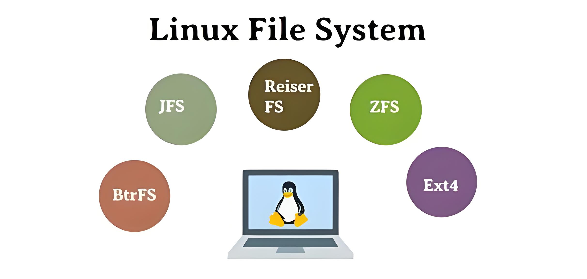
（1）ext 专门为Linux设计的，为linux核心所做的第一个文件系统。
该文件系统最大支持2GB的容量。
（2）ext2 由Rémy Card设计，用以代替ext，是LINUX内核所用的文件系统。单个文件最大限制2TB；
该文件系统最大支持32TB的容量。
（3）ext3 一个日志文件系统。
单个文件最大限制16TB，该文件系统最大支持32TB的容量。
（4）ext4 Theodore Tso领导的开发团队实现,Linux系统下的日志文件系统。
单个文件最大限制16TB， 该文件系统最大支持1EB的容量。
（5）JFS2 一种字节级日志文件系统,该文件系统主要是为满足服务器的高吞吐量和可靠性需求而设计、 开发的。
单个文件最大限制16TB，该文件系统最大支持1PB的容量。
（6）XFS 是 64 位高性能日志文件系统。对 XFS 的支持大概在 2002 年合并到了 Linux 内核。
对于 64 位文件系统，XFS 支持最大文件系统大小为 8 exbibytes。
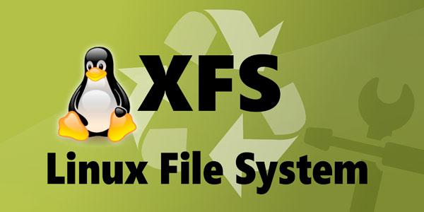
目前RHEL 7.0 文件系统默认使用 XFS。
XFS的文件系统结构如上，不同于Ext4，它通过B+树来索引inode和数据块。用树结构的文件系统通常相比Ext4用表结构，如链表、直接/间接Block以及extent，能更好地支持大文件，如视频/数据库文件等。另外其元数据规模少，使得硬盘可用空间更多，实测XFS、Btrfs多平均至少1.5%以上的可用空间。
XFS能支持单卷可达 8EiB ，最大文件也到 8EiB ，相比Ext4的16TiB可高了几个数量级。而且是其实动态分配inode的实现机制，只要有空间，就不会耗尽inode。
.png)
4、有趣的话题，如何销毁硬盘数据
在 Linux 系统中，一个名字为 /root/test.sh 的文件在硬盘上是如何存储的？
test.sh 文件在硬盘上存储了两部分内容：
（1）第一部分存储在硬盘分区sda1 的inode区域的一个编号为 18127615 的 inode节点内。
存储的是该文件的属性信息，具体的属性见下图的黄色箭头指示的信息。
（2）第二部分存储在硬盘分区的数据区部分
具体存储内容见下图，也就是该文件的真正的数据。
删除文件时候，究竟删除了啥？
二、实战
1、磁盘分区fdisk或gparted
第1步：

第2步：

第3步：从/dev/sdb 硬盘上分出一个200M 的主分区
（1）使用fdisk 格式化
fdisk命令用途：在交互式的操作环境中管理磁盘分区格式：
fdisk [磁盘设备]交互模式中的常用指令
m：查看操作指令的帮助信息
p：列表查看分区信息
n：新建分区
d：删除分区
t：变更分区类型
w：保存分区设置并退出
q：放弃分区设置并退出
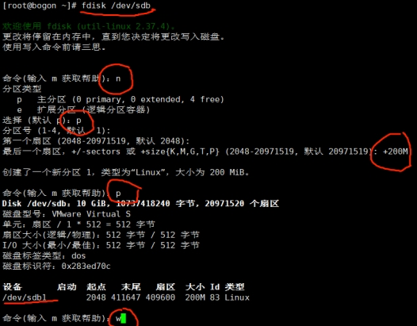
第4步：

（2）使用gparted 格式化
图形化的分区工具：
安装gparted图形分区工具。
[root@bogon ~]# yum install epel-release.noarch
[root@bogon ~]# yum install gparted

2、格式化分区
第 5 步：

3、分区挂载和卸载，自动挂载

（1）啥是挂载？
这个问题需要解释一下：
这是Windows分区：

这是Linux打开的样子：

这是Linux 系统中硬盘分区：

那么从哪儿能找到Linux硬盘分区呢？首先理解挂载的含义。

也就是说Linux系统要求硬盘分区和目录必须挂载到一起才能使用，例如：

从上图中可以看出，分区 sda1 和 / 挂载在一起；分区 sda2 和 /home 目录挂载在一起；分区sda3和/local目录挂载在一起。挂载在一起后，使用该目录就是使用该硬盘分区。例如cd /home，这时就是进入了sda2 分区。此时新建的文件，就保存在sda2分区中了。
理解挂载的意义了么？
（2）那么啥是卸载？（umount）
当使用卸载命令后：
例如：umount /dev/sda2
那么此时/home 目录就和分区sda2没有关系了。
思考一下，这时如果在/home 里面新建文件，保存在哪个硬盘分区上了呢？
（3）挂载和卸载命令

挂载示例：

卸载示例：

这种挂载方式只能临时起作用，一旦系统重启后，挂载就失效了。如果想要实现永久挂载的效果，采用下面的方式；
（4）开机自动挂载

编辑/etc/fstab 文件，实现开机自动挂载。
格式为：
4、交换分区

4.1 交换分区

4.2 交换文件
对于交换分区常见有两种操作，一种是扩展交换分区，另一种是缩小交换分区，这里是采用两种方法进行扩展和缩小的示例。
可以参考这篇知乎文章进行实战： https://zhuanlan.zhihu.com/p/573814029
三、随堂测试